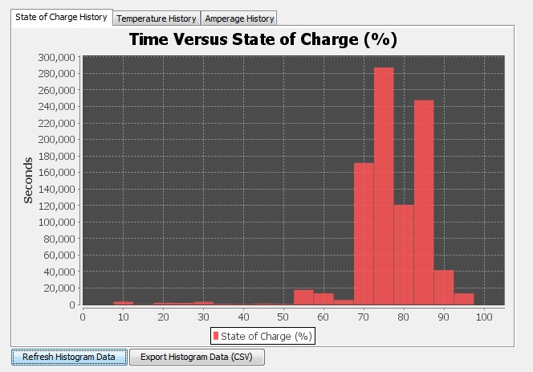

NOTE: The "Refresh Histogram Data' button must be pressed at least once for the utility to request the histogram data from the BMS.
This section represents the accumulated total time the battery pack has spent at various different battery state of charge percentages. The time units are expressed on the left and the percentage value is expressed on the bottom.
The charts may be zoomed in on by right-clicking and dragging over different sections of the chart. Right-clicking and dragging left will reset the view to the original zoom.
Histogram data may be exported to CSV file by selecting the labeled button at the bottom of the window.
Histogram data is stored in non-volatile long term memory and persist over power loss or restarting / unplugging the BMS. The histogram data may be reset or cleared through the File menu item (Reset Historical / Collected Data).
| < Recent Events | Temperature History > |